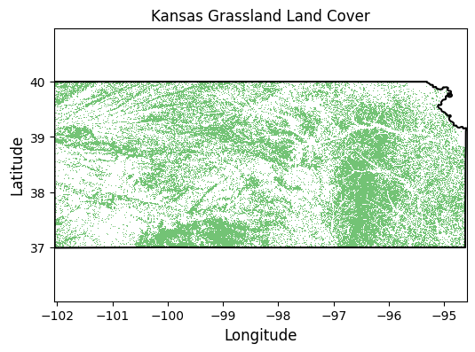

# Import modules
import ee
import numpy as np
import pandas as pd
import requests
import xarray as xr
import matplotlib.pyplot as plt
from matplotlib import colors, colormaps7 Reduce collection to image
Often times we are interested in summarizing a collection of images into a single image. Reducers in Google Earth Engine (GEE) are functions that aggregate data, enabling the computation of summary metrics over images, image collections, or features. Reducers can summarize data spatially, temporally, or across bands, making them powerful tools for analyzing and synthesizing large geospatial datasets.
# Authenticate
#ee.Authenticate()
# Initialize GEE API
ee.Initialize()To authorize access needed by Earth Engine, open the following URL in a web browser and follow the instructions:
The authorization workflow will generate a code, which you should paste in the box below.
Enter verification code: 4/1AeaYSHBA-wx2JH7WUrIPlqFJLl5hQclgx2j_aR1wvF__IblMf1jougLKlak
Successfully saved authorization token.Define helper functions
# Define function to save images to the local drive
def save_geotiff(ee_image, filename, crs, scale, geom, bands=[]):
"""
Function to save images from Google Earth Engine into local hard drive.
"""
image_url = ee_image.getDownloadUrl({'region': geom,'scale':scale,
'bands': bands,
'crs': f'EPSG:{crs}',
'format': 'GEO_TIFF',
'formatOptions': {'cloudOptimized': True,
'noDataValue': 0}})
# Request data using URL and save data as a new GeoTiff file
response = requests.get(image_url)
with open(filename, 'wb') as f:
f.write(response.content)
return print('Saved image')Example 1: Sum reducers
The sum reducer adds up all the values it encounters. This is useful for calculating total rainfall, snowfall, or any other cumulative measure over an area. IN this example we will compute the annual precipitation in 2023 across Oklahoma.
# Read US states
US_states = ee.FeatureCollection("TIGER/2018/States")
# Select Kansas
region = US_states.filter(ee.Filter.eq('NAME','Oklahoma'))
# Create mask
mask = ee.Image.constant(1).clip(region).mask()
Note
The clip() method only affects the visualization of the image in Google Earth Engine. To ensure the image is clipped in the exported GeoTIFF, we need to explicitly apply the mask.
prism = ee.ImageCollection('OREGONSTATE/PRISM/AN81d').filterDate('2023-01-01', '2023-12-31')
precip_img = prism.select('ppt').reduce(ee.Reducer.sum()).mask(mask)
Note
The result of applying a reducer to an ImageCollection is an Image.
# Save geotiff
precip_filename = '../outputs/oklahoma_rainfall_2023.tif'
save_geotiff(precip_img, precip_filename, crs=4326, scale=4_000, geom=region.geometry())Saved image# Read saved geotiff image
precip_raster = xr.open_dataarray(precip_filename).squeeze()# Get coordinates of the county geometry
df = pd.DataFrame(region.first().getInfo()['geometry']['coordinates'][0])
df.columns = ['lon','lat']
df.head()| lon | lat | |
|---|---|---|
| 0 | -103.002435 | 36.675527 |
| 1 | -103.002390 | 36.670994 |
| 2 | -103.002390 | 36.668480 |
| 3 | -103.002390 | 36.664934 |
| 4 | -103.002390 | 36.661792 |
# Create figure
precip_raster.plot.imshow(figsize=(6,3), cmap='Spectral', add_colorbar=True,
cbar_kwargs={'label':'Precipitation (mm)'})
plt.plot(df['lon'], df['lat'],'-k')
plt.title('Oklahoma Precipitation 2023')
plt.xlabel('Longitude')
plt.ylabel('Latitude')
#plt.axis('equal')
plt.tight_layout()
plt.show()# Create contour figure
precip_raster.plot.contourf(figsize=(6,3), cmap='Spectral', add_colorbar=True,
cbar_kwargs={'label':'Precipitation (mm)'})
plt.plot(df['lon'], df['lat'],'-k')
plt.title('Oklahoma Precipitation 2023')
plt.xlabel('Longitude')
plt.ylabel('Latitude')
#plt.axis('equal')
plt.tight_layout()
plt.show()# Find min and max precipitation
precip_img.reduceRegion(reducer = ee.Reducer.minMax(),
geometry = region.geometry(),
scale = 4_000).getInfo(){'ppt_sum_max': 1753.4329500616004, 'ppt_sum_min': 349.43359203080763}
Tip
The .minMax() reducer finds the minimum and maximum value. This particular reducer is useful for identifying extremes like the coldest and hottest temperatures or the lowest and highest annual precipitation amounts.
Example 2: Min Reducer
The .min() reducer finds the minimum value. In this example we will determine the minimum and maximum land surface teperatures.
# Read US states
US_states = ee.FeatureCollection("TIGER/2018/States")
# Select Kansas
region = US_states.filter(ee.Filter.eq('NAME','Kansas'))
# Create mask
mask = ee.Image.constant(1).clip(region).mask()# Load an image collection from PRISM
prism = ee.ImageCollection('OREGONSTATE/PRISM/AN81d').filterDate('2010-01-01', '2020-12-31').filterBounds(region)
tmin_img = prism.select('tmin').reduce(ee.Reducer.min()).mask(mask)# Save geotiff
tmin_filename = '../outputs/kansas_tmin_2010_2020.tif'
save_geotiff(tmin_img, tmin_filename, crs=4326, scale=4000, geom=region.geometry())Saved image# Read saved geotiff image
tmin_raster = xr.open_dataarray(tmin_filename).squeeze()# Get the dictionary with all the metadata into a variable
# Print this variable to see the details
region_metadata = region.first().getInfo()
# Get coordinates of the county geometry
df = pd.DataFrame(region_metadata['geometry']['geometries'][1]['coordinates'][0])
df.columns = ['lon','lat']
# Create figure
tmin_raster.plot.imshow(figsize=(6,3), cmap='cool_r', add_colorbar=True,
cbar_kwargs={'label':'Temperature (Celsius)'})
plt.plot(df['lon'], df['lat'],'-k')
plt.title('Kansas Air Temperature 2010-2020')
plt.xlabel('Longitude')
plt.ylabel('Latitude')
#plt.axis('equal')
plt.tight_layout()
plt.show()# Find lowest temperature
tmin_img.reduceRegion(reducer = ee.Reducer.min(),
geometry = region.geometry(),
scale = 4_000).getInfo(){'tmin_min': -30.395000457763672}I still need to figure out how to obtain the coordinates of the location with the lowest temperature. If someone know the answer, please send me an e-mail or push the code to Github.
Example 4: Max reducer
The .max() reducer find the maximum value. In this example we will use it to find the total spatial extent burned by wildfires over multiple days in southwest Kansas and northwest Oklahoma.
The Starbuck wildfire occurred in March 2017 and stands as one of the largest wildfires in Kansas history. The Starbuck wildfire started in Beaver county in Oklahoma and then spread across multiple Kansas counties, including Meade, Clark, and Comanche counties, ravaging over 662,000 acres of land that included ranches and residential areas. The fire’s magnitude was so extensive that it not only caused significant ecological damage but also resulted in the loss of numerous cattle, property destruction, and challenged the resilience of local communities. The Starbuck wildfire highlighted the importance of community solidarity, the challenges of managing fire risk in rural regions, and the necessity for improved fire management, preparedness, and mitigation strategies.
# Load the US county boundaries.
counties = ee.FeatureCollection('TIGER/2016/Counties');
# Filter the counties by name and state (Kansas FIPS code is "20")
ks_counties = counties.filter(ee.Filter.Or(ee.Filter.eq('NAME', 'Clark'),
ee.Filter.eq('NAME', 'Meade'),
ee.Filter.eq('NAME', 'Comanche'))).filter(ee.Filter.eq('STATEFP', '20'))
# Filter the counties by name and state (Oklahoma FIPS code is "40")
ok_counties = counties.filter(ee.Filter.Or(ee.Filter.eq('NAME', 'Beaver'),
ee.Filter.eq('NAME', 'Harper'))).filter(ee.Filter.eq('STATEFP', '40'))
## Combine the selected counties into a single geometry.
region = ks_counties.merge(ok_counties)
# Combined counties (not use in the tutorial)
region_union = region.union()
# Get bounding box of combined geometry
bbox = region.geometry().bounds()
Note
For combining FeatureCollections we use the merge() method. To combine geometries or features within a FeatureCollection we use the .union() method.
# Load modis product
modis = ee.ImageCollection('MODIS/061/MOD14A1').filterDate('2017-03-01', '2017-03-31')
max_fire = modis.select('FireMask').reduce(ee.Reducer.max())# Save GeoTIFF
max_fire_filename = '../outputs/starbuck_wildfire_.tiff'
save_geotiff(max_fire, filename=max_fire_filename, crs=4326, scale=1000,
geom=bbox, bands=[])Saved image# Get geometry coordinates for all counties (this is a MultiPolygon object)
region_geom = region.geometry().getInfo()# Read saved geotiff image
max_fire_raster = xr.open_dataarray(max_fire_filename).squeeze()# Paletter of colors for the Enhanced Vegetation Index
hex_palette = ['#ffffff','#ff0000']
# Use the built-in ListedColormap function to do the conversion
cmap = colors.ListedColormap(hex_palette)# Create figure
max_fire_raster.plot.imshow(figsize=(6,4), cmap=cmap, add_colorbar=False)
for r in region_geom['coordinates']:
lon,lat = zip(*r[0])
plt.plot(list(lon), list(lat), linestyle='-', linewidth=1, color='grey')
plt.title('Region with multiple large wildfires in 2017')
plt.xlabel('Longitude')
plt.ylabel('Latitude')
#plt.axis('equal')
plt.tight_layout()
plt.show()Example 5: Median reducer
The median reducer computes the typicalvalue of a set of numbers. It’s often used to aggregate pixel values across images or image collections.
In this example we will compute the median enhanced vegetation index for a county and we learn how to:
- filter a FeatureCollection,
- compute the median of an ImageCollection,
- create, apply, and update a mask,
- retrieve, save, and read a geotiff image
# US Counties dataset
US_counties = ee.FeatureCollection("TIGER/2018/Counties")
# Select county of interest
county = US_counties.filter(ee.Filter.eq('GEOID','20161'))
# Create mask
mask = ee.Image.constant(1).clip(county).mask()# Modis EVI
modis_evi = ee.ImageCollection('MODIS/MCD43A4_006_EVI')
evi_img = modis_evi.filterDate('2021-04-01', '2021-09-30') \
.select('EVI').filterBounds(county).median()
# Create mask for region
evi_img = evi_img.mask(mask)
# Update mask to avoid water bodies (wich typically have evi<0.2)
evi_img = evi_img.updateMask(evi_img.gt(0.2))
Note
collection.median() is a shorter way to compute the median than collection.reduce(ee.Reducer.median()). The latter offers more flexibility and allows for additional configurations not available through the shorter and more convenient method.
# Set visualization parameters.
# https://colorbrewer2.org/#type=sequential&scheme=YlOrBr&n=7
evi_palette = ['#CE7E45', '#DF923D', '#F1B555', '#FCD163', '#99B718', '#74A901',
'#66A000', '#529400', '#3E8601', '#207401', '#056201', '#004C00', '#023B01',
'#012E01', '#011D01', '#011301']
evi_cmap = colors.ListedColormap(evi_palette)# Save geotiff image
evi_filename = '../outputs/evi_riley_county.tif'
save_geotiff(evi_img, evi_filename, crs=4326, scale=250,
geom=county.geometry(), bands=['EVI'])Saved image# Read GeoTiff file using the Xarray package
evi_raster = xr.open_dataarray(evi_filename).squeeze()# Get coordinates of the county geometry
df = pd.DataFrame(county.first().getInfo()['geometry']['coordinates'][0])
df.columns = ['lon','lat']
df.head()| lon | lat | |
|---|---|---|
| 0 | -96.961683 | 39.220095 |
| 1 | -96.961369 | 39.220095 |
| 2 | -96.956566 | 39.220005 |
| 3 | -96.954188 | 39.220005 |
| 4 | -96.952482 | 39.220005 |
# Create figure
plt.figure(figsize=(6,4))
evi_raster.plot.imshow(cmap=evi_cmap, vmin=0.2, vmax=0.7,
levels=10, cbar_kwargs={'label':'EVI', 'format':"{x:.2f}"}) # Can also pass robust=True
plt.plot(df['lon'], df['lat'],'-k')
plt.title('Riley county EVI - 2021', size=12)
plt.xlabel('Longitude', size=12)
plt.ylabel('Latitude', size=12)
plt.xlim([-97,-96.35])
plt.ylim([39, 39.6])
plt.axis('equal')
#plt.savefig('../outputs/riley_county_median_evi.jpg', dpi=300)
plt.show()Example 6: Mean reducer
The mean reducer computes the pixel-wise average value of a set of images in a collection. It’s often used to aggregate pixel values across images or image collections. In this exercise we will compute the mean NDVI for each pixel over a watershed.
# Read US watersheds using hydrologic unit codes (HUC)
watersheds = ee.FeatureCollection("USGS/WBD/2017/HUC12")
mcdowell_creek = watersheds.filter(ee.Filter.eq('huc12', '102701010204')).first()
# Get geometry so that we can plot the boundary
mcdowell_creek_geom = mcdowell_creek.geometry().getInfo()
# Create mask for the map
mask = ee.Image.constant(1).clip(mcdowell_creek).mask()# Get watershed boundaries
df_mcdowell_creek_bnd = pd.DataFrame(np.squeeze(mcdowell_creek_geom['coordinates']),
columns=['lon','lat'])
# Inspect dataframe
df_mcdowell_creek_bnd.head()| lon | lat | |
|---|---|---|
| 0 | -96.552986 | 39.093157 |
| 1 | -96.553307 | 39.093741 |
| 2 | -96.553592 | 39.094234 |
| 3 | -96.553683 | 39.094391 |
| 4 | -96.553988 | 39.094490 |
Note
Sometimes regions like watersheds are returned as a feature instead of a geometry. This will not work for reducing operations. To solve the problem we can use the geometry() method. To inspect whether the returned object is a feature or a geometry use the getInfo() method to inspect the object.
# Get collection for Terra Vegetation Indices 16-Day Global 500m
start_date = '2022-01-01'
end_date = '2022-12-31'
collection = ee.ImageCollection('MODIS/006/MOD13A1').filterDate(start_date, end_date)# Reduce the collection to an image with a median reducer.
ndvi_mean = collection.mean().multiply(0.0001).clip(mcdowell_creek)
# Apply mask
ndvi_mean = ndvi_mean.mask(mask)
# Save geotiff image
ndvi_filename = '../outputs/ndvi_mean_mcdowell_creek.tif'
save_geotiff(ndvi_mean, ndvi_filename, crs=4326, scale=250,
geom=mcdowell_creek.geometry(), bands=['NDVI'])Saved image# Define NDVI colormap
hex_palette = ['#CE7E45', '#DF923D', '#F1B555', '#FCD163', '#99B718', '#74A901',
'#66A000', '#529400', '#3E8601', '#207401', '#056201', '#004C00', '#023B01',
'#012E01', '#011D01', '#011301']
# Use the built-in ListedColormap function to do the conversion
ndvi_cmap = colors.ListedColormap(hex_palette)# Read GeoTiff file using the Xarray package
raster = xr.open_dataarray(filename).squeeze()
plt.figure(figsize=(6,5))
raster.plot(cmap=ndvi_cmap, cbar_kwargs={'label':'NDVI'}, vmin=0.1, vmax=0.7)
plt.plot(df_mcdowell_creek_bnd['lon'], df_mcdowell_creek_bnd['lat'], color='r')
plt.title('McDowell Creek watershed')
plt.xlabel('Longitude')
plt.ylabel('Latitude')
plt.show()Example 7: Count reducer over a region
The count reducer tallies the number of values, useful for counting the number of observations or pixels within a region that meet certain criteria. In this example we will find the area of Kansas covered by grasslands. If you thought that Kansas was mostly covered by cropland, then you are up for a surprise.
# Read US states
US_states = ee.FeatureCollection("TIGER/2018/States")
# Select Kansas
region = US_states.filter(ee.Filter.inList('NAME',['Kansas']))# Land use for 2021
land_use = ee.ImageCollection('USDA/NASS/CDL') \
.filter(ee.Filter.date('2021-01-01', '2021-12-31')).first().clip(region)
# Select cropland layer
cropland = land_use.select('cropland')# Select pixels for a cover
# 1-Corn; 4-sorghum; 5-soybeans; 24-winter wheat; 176 grassland/pasture
land_cover_value = 176 # This is the code for grasslands
land_cover_img = cropland.eq(land_cover_value).selfMask()# Save geotiff image
land_cover_filename = '../outputs/land_cover_kansas.tif'
save_geotiff(land_cover_img, land_cover_filename, crs=4326, scale=250,
geom=region.geometry())Saved image# Read GeoTiff file using the Xarray package
land_cover_raster = xr.open_dataarray(land_cover_filename).squeeze()# Get the dictionary with all the metadata into a variable
# Print this variable to see the details
region_metadata = region.first().getInfo()
# Get coordinates of the county geometry
df = pd.DataFrame(region_metadata['geometry']['geometries'][1]['coordinates'][0])
df.columns = ['lon','lat']# Create figure
plt.figure(figsize=(6,4))
land_cover_raster.plot.imshow(cmap='Greens', add_colorbar=False)
plt.plot(df['lon'], df['lat'],'-k')
plt.title('Kansas Grassland Land Cover', size=12)
plt.xlabel('Longitude', size=12)
plt.ylabel('Latitude', size=12)
plt.xlim([-97,-96.35])
plt.ylim([39, 39.6])
plt.axis('equal')
#plt.savefig('../outputs/kansas_grasslands.jpg', dpi=300)
plt.show()
# Reduce the collection and compute area of land cover
# Kansas has an area of 213,100 square kilometers
# Apply reducer
land_cover_count = land_cover_img.reduceRegion(reducer=ee.Reducer.count(),
geometry=region.geometry(),
scale=250)
land_cover_pixels = land_cover_count.get('cropland').getInfo()
print(f'There are a total of {land_cover_pixels:,} pixels with grassland')
state_area = 213_000 # km^2
state_fraction = (land_cover_pixels*250**2) / 10**6 / state_area
print(f'Kansas has a {round(state_fraction*100)} % of the area covered by grassland')
There are a total of 1,444,936 pixels with grassland
Kansas has a 42 % of the area covered by grasslandThe reduceRegion() function applies a reducer to all the pixels in a specified region. Altrnatively you can pass options as keyword arguments using a dictionary, like so:
land_cover_count = land_cover_img.reduceRegion(**{
'reducer': ee.Reducer.count(),
'geometry': region.geometry(),
'scale': 250})